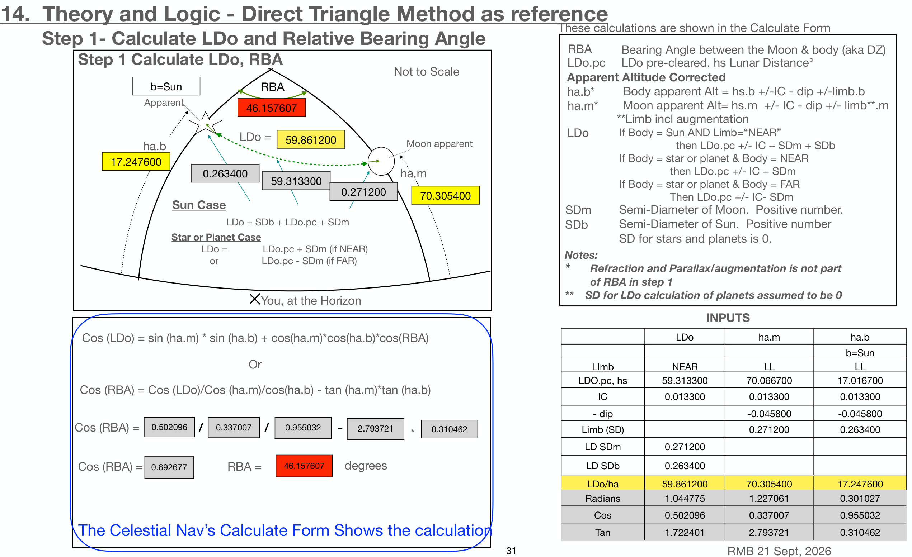

Full-size illustration. Scroll to inspect the details.

14. Theory and Logic - Direct Triangle Method as reference
These calculations are shown in the Calculate Form
Step 1- Calculate LDo and Relative Bearing Angle
Step 1 Calculate LDo, RBA
RBA Bearing Angle between the Moon & body (aka DZ) LDo.pc LDo pre-cleared. hs Lunar Distance°
Not to Scale
Apparent Altitude Corrected
b=Sun
RBA
Apparent
ha.b* Body apparent Alt = hs.b +/-IC - dip +/-limb.b ha.m* Moon apparent Alt= hs.m +/- IC - dip +/- limb**.m
46.157607
**Limb incl augmentation
LDo =
59.861200
Moon apparent
ha.b
17.247600
ha.m
0.263400 59.313300 0.271200
70.305400
LDo If Body = Sun AND Limb=“NEAR” then LDo.pc +/- IC + SDm + SDb If Body = star or planet & Body = NEAR then LDo.pc +/- IC + SDm If Body = star or planet & Body = FAR Then LDo.pc +/- IC- SDm
Sun Case
LDo = SDb + LDo.pc + SDm
SDm SDb
Star or Planet Case LDo = LDo.pc + SDm (if NEAR)
or LDo.pc - SDm (if FAR)
Semi-Diameter of Moon. Positive number. Semi-Diameter of Sun. Positive number SD for stars and planets is 0. Notes: * Refraction and Parallax/augmentation is not part of RBA in step 1 ** SD for LDo calculation of planets assumed to be 0
You, at the Horizon
INPUTS
LDo ha.m ha.b
Cos (LDo) = sin (ha.m) * sin (ha.b) + cos(ha.m)*cos(ha.b)*cos(RBA)
Or
b=Sun LImb NEAR LL LL LDO.pc, hs 59.313300 70.066700 17.016700
Cos (RBA) = Cos (LDo)/Cos (ha.m)/cos(ha.b) - tan (ha.m)*tan (ha.b)
IC 0.013300 0.013300 0.013300
- dip -0.045800 -0.045800
Limb (SD) 0.271200 0.263400
Cos (RBA) = 0.502096 / 0.337007 / 0.955032 - 2.793721 * 0.310462
LD SDm 0.271200
LD SDb 0.263400
Cos (RBA) = 0.692677
RBA = 46.157607 degrees
LDo/ha 59.861200 70.305400 17.247600 Radians 1.044775 1.227061 0.301027
Cos 0.502096 0.337007 0.955032
Tan 1.722401 2.793721 0.310462
The Celestial Nav’s Calculate Form Shows the calculation